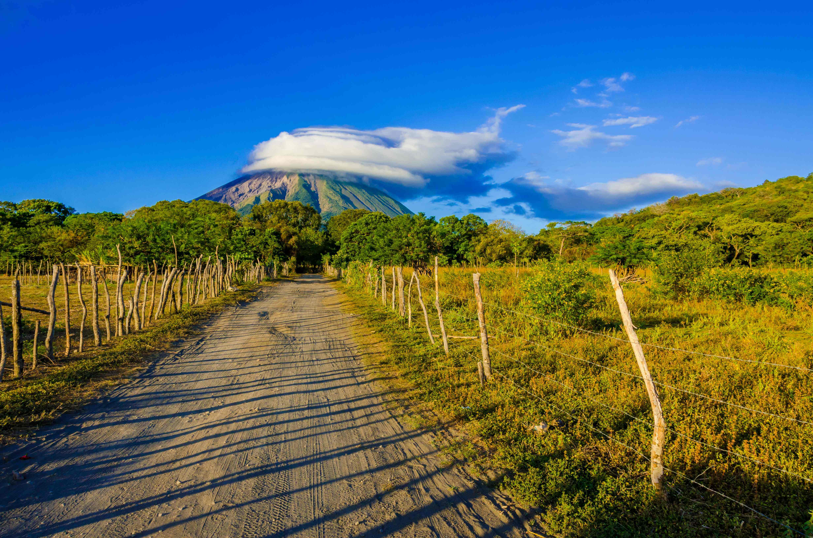
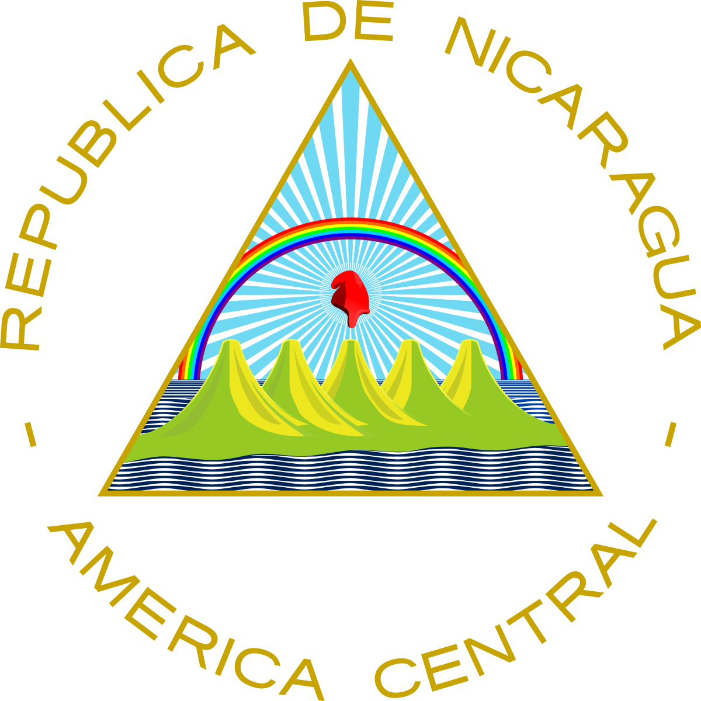
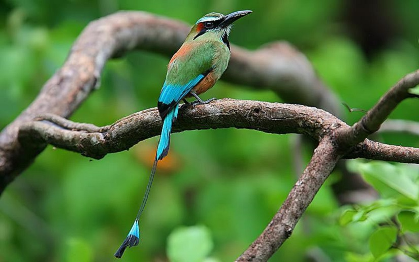
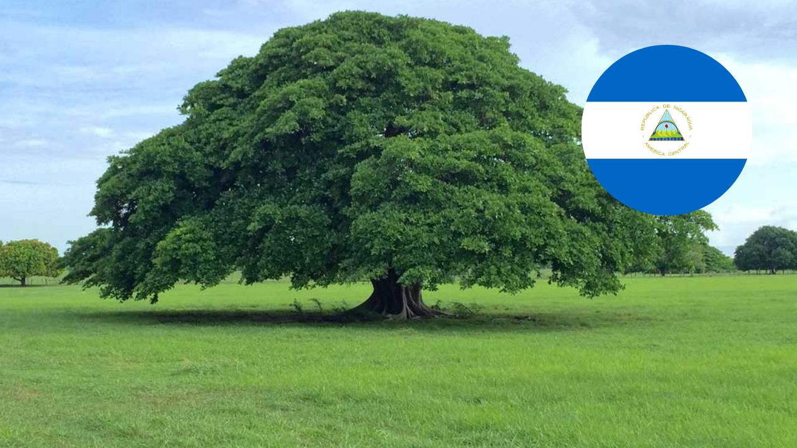
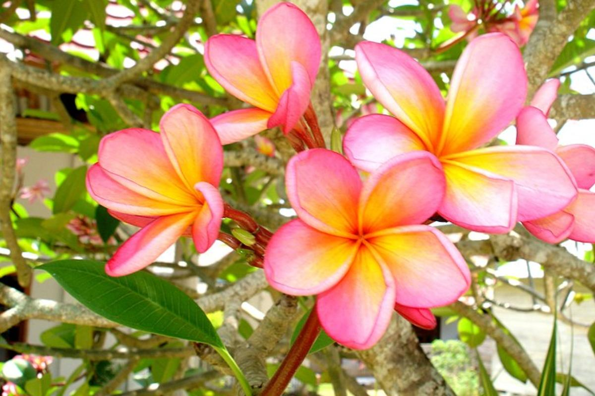

Pagina web informativo sobre Nicaragua

Acerca de Nicaragua
Nicaragua es un país de América Central ubicado entre el océano Pacífico y el mar Caribe, conocido
por su espectacular territorio con lagos, volcanes y playas. El extenso lago Managua y el icónico
estratovolcán Momotombo se ubican al norte de la capital, Managua. Al sur está Granada, que se
destaca por su arquitectura colonial española y un archipiélago de islotes navegables con abundantes
especies de aves tropicales.

Simbolos Patrios de Nicaragua
-Escudo Nacional: El Escudo de Nicaragua fue creado, junto con la actual Bandera de Nicaragua,
mediante el Decreto Legislativo del 5 de septiembre de 1908, siendo Presidente de La República
José Santos Zelaya, fijándose de modo definitivo el Escudo y la Bandera de Nicaragua actuales.

-Ave Nacional: El Guardabarranco (Eumomota superciliosa) representa con gran elegancia al país,
teniendo el título de Ave Nacional de Nicaragua. Se dedara por Decreto No. 1891, publicado en La Gaceta,
Diario Oficial No. 194, del 27 de agosto de 1971, que es el Guardabarranco, el ave nacional de Nicaragua.
El Guardabarranco, es un pájaro de tamaño pequeño, tiene alas cortas, redondas y la cola larga, con las
plumas extremas en forma de raquetas.

-Arbol Nacional: El madroño es el Árbol Nacional de Nicaragua desde 1971. En La Gaceta, Diario Oficial
de la República de Nicaragua, número 194, aparece reproducido el Decreto Legislativo No. 1891 por el cual se
declara al madroño Árbol Nacional de Nicaragua. A nivel nacional y en cada rincón de nicaragua podemos encontrar
este árbol quien con sus colores vistosos adorna cualquier lugar donde se encuentre. Actualmente los podemos
encontrar en muchas alcaldías del país, sembrado en parques, bulevares, hogares y escuelas.

-Flor Nacional: El Sacuanjoche fue declarada Flor Nacional en 1971. Bella y con intensa fragancia, la
flor de la Plumeria rubra f. acutifolia o Sacuanjoche, como le conocen en Nicaragua, guarda en su sencilla
figura significados que elogian aún más sus cualidades naturales.
